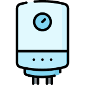

EMS-ESP Web UI mockups
Static HTML, mock data, not part of the build.
A
Refined classic
Closest to today's UI. Same drawer, app bar and striped tables, tidied up.
Dashboard as one card per device with favourite values
Devices: device table + filterable entity table
Status overview with a page per area: hardware, data traffic, system log with a console line, network, MQTT, NTP, access point
Settings forms with change markers, a save bar and restart hints; Wi-Fi scan, users and API keys, modules, firmware updates
Modules: Sensors, Customizations, Commands, Scheduler, Custom Entities, with a save bar for pending changes
Heating settings backup and restore (Settings, Download/Upload)
Help with a guided problem report, and a User Profile page
#dashboard
#devices
#sensors
#customizations
#commands
#scheduler
#customentities
#status
#status-log
#settings
#settings-application
#settings-network
#settings-security
#settings-version
#downloadupload
#restore
#help
#user